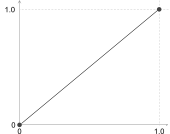
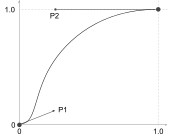
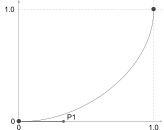
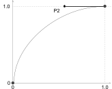

Animations
For Fun and Profit
Martine Dowden
Martine Dowden
(She/Her)
- Book
- Tiny CSS Projects
- Course
- 22
- CSS Animations & Transitions
- GDE
- 21
- Angular
- Book
- 20
- Architecting CSS
- Book
- Approachable Accessibility
- Microsoft MVP
- 19
- Developer Technologies
- GDE
- 18
- Web Technologies
- Product
- 17
- FlexePark
- Book
- 15
- Programming Languages ABC++
- Ivy Tech
- 14
- Vis Comm Technical Certificate
- Marian University
- 09
- BS Psychology
Which to choose?
Transitions
.panel {
/* closed styles */
transition: all 250ms ease-in-out;
}
.panel.expanded {
/* opened styles */
}
Animations
Loading...
@keyframes loading {}
svg rect {
animation: loading 3s ease-in-out infinite;
}
Transitions
Transitions
- Between pre-existing states
- looks_one Runs once
- Requires a trigger
Transitions
- Response
- explore Orienting
- Natural
Hover & Focus
Easing Functions
- linear
- 
cubic-bezier
(0.0, 0.0, 1.0, 1.0)- ease
- 
cubic-bezier
(0.25, 0.1, 0.25, 1.0)- ease-in
- 
cubic-bezier
(0.42, 0.0, 1.0, 1.0)- ease-in-out

cubic-bezier
(0.42, 0.0, 0.58, 1.0)- ease-out
- 
cubic-bezier
(0.42, 0.0, 0.58, 1.0)
Cubic Bezier
cubic-bezier
(0, 0.71, 0.64, 1.23)The Curve
- Defined by 4 points,
P0,P1,P2, andP3 P0andP3define the beginning and endP1andP2represent the control points to give the curve its shape- Points are defined by (x, y) coordinates
Cubic Bezier
cubic-bezier
(0, 0.71, 0.64, 1.23)CSS function
- Pre-defines
P0andP3at(0, 0) and (1, 1) - You define
P1andP2 - The
xvalues need to remain between0and1(inclusive). cubic-bezier(x1, y1, x2, y2)
Cubic Bezier
cubic-bezier
(0, 0.71, 0.64, 1.23)The Animation
Limitations
height: auto
.header {
...
border-radius: 8px;
transition: all 250ms ease-in-out;
}
.body {
...
height: 0;
overflow: hidden;
transform-origin: top center;
transition: height 250ms ease-in-out;
}
.expanded .header {
border-radius: 8px 8px 0 0;
}
.expanded .body {
border: solid 1px #4484c5;
border-top: none;
height: auto;
padding: 1rem;
}
Limitations
height: auto
.header {
...
border-radius: 8px;
transition: all 250ms ease-in-out;
}
.body {
...
height: 0;
overflow: hidden;
transform-origin: top center;
transition: height 250ms ease-in-out;
}
.expanded .header {
border-radius: 8px 8px 0 0;
}
.expanded .body {
border: solid 1px #4484c5;
border-top: none;
height: 300px;
padding: 1rem;
}
Some Solutions
-
max-height -
transform: scale() -
 JavaScript
JavaScript
Accessibility
Showing and Hiding Content
- Use semantic tags
- Test for keyboard accessibility
- Add ARIA for screen reader accessibility
You will need JavaScript to make your show / hides accessible
Accessibility and Motion
Success Criterion 2.3.3 Animation from Interactions:
Motion animation triggered by interaction can be disabled, unless the animation is essential to the functionality or the information being conveyed.
@media (prefers-reduced-motion: reduce) {
/** Disable animations and transitions here **/
}
/** OR **/
@media (prefers-reduced-motion: no-preference) {
/** Animations and transitions go here **/
}
What about using display: none?
Animations
Animations
- Uses keyframes
- Runs any number of times
- Does not require a trigger
Animations
- Complex Animations
- Repeated animations
-
display: none
Keyframe Structures
@keyframes animation-name {
from { }
to { }
}
.class {
animation: duration | easing-function | delay | iteration-count | direction | fill-mode | play-state | name
}
Declarations in a keyframe qualified with !important are ignored.
Revisiting The Expansion Panel
@keyframes expansion {
from { transform: scaleY(0); }
to { transform: scaleY(1); }
}
.panel .body {
overflow: hidden;
transform-origin: top;
display: none;
}
.panel.expanded .body {
display: flex;
animation: expansion 250ms ease-in-out;
}
Closing the Panel
Our 2 states
@keyframes expansion {
from { transform: scaleY(0); }
to { transform: scaleY(1); }
}
.panel .body {
display: none;
transform-origin: top;
}
.panel.expanded .body {
display: block;
}
.panel.open .body {
display: block;
animation: expansion 250ms ease-in-out;
}
.panel.close .body {
animation: expansion 250ms ease-in-out reverse;
}
Closing the Panel
HTML
function toggleExpandAnimated(elem) {
Panel Content
Closing the Panel
Triggering the animation
@keyframes expansion {
from { transform: scaleY(0); }
to { transform: scaleY(1); }
}
.panel .body {
display: none;
transform-origin: top;
}
.panel.expanded .body {
display: block;
}
.panel.open .body {
display: block;
animation: expansion 250ms ease-in-out;
}
.panel.close .body {
animation: expansion 250ms ease-in-out reverse;
}
Closing the Panel
JavaScript
function animatePanel(elem) {
const _panel = document.getElementById(elem);
const isOpen = _panel.classList.contains('expanded')
if (isOpen) {
_panel.classList.add('close')
} else {
_panel.classList.add('open')
}
}
function togglePanel(panel) {
const _panel = document.getElementById(elem);
const isOpen = _panel.classList.contains('open')
if (isOpen) {
_panel.classList.remove('open')
_panel.classList.add('expanded')
} else {
_panel.classList.remove('expanded')
_panel.classList.remove('close')
}
}
Output
Accessibility
Showing and Hiding Content
Same as with transitions
- Use semantic tags
- Test for keyboard accessibility
- Add ARIA for screen reader accessibility
Animations and SVGs
Loading...
The SVG
Loading...
The CSS
Loading...
.loader svg {
display: block;
margin: 1rem auto;
}
rect:nth-of-type(1) { fill: #122849; }
rect:nth-of-type(2) { fill: #0A3F7F; }
rect:nth-of-type(3) { fill: #4484c5; }
rect:nth-of-type(4) { fill: #0A3F7F; }
rect:nth-of-type(5) { fill: #122849; }
Animations and SVGs
Loading...
@keyframes loader {
from { transform: scaleY(1); }
50% { transform: scaleY(0); }
to { transform: scaleY(1); }
}
.loader rect {
transform-origin: center;
animation: loader 3s ease-in-out infinite;
}
Animations and SVGs
@keyframes loader {
from { transform: scaleY(1); }
50% { transform: scaleY(0); }
to { transform: scaleY(1); }
}
.loader rect {
transform-origin: center;
animation: loader 3s ease-in-out infinite;
}
.loader rect:nth-of-type(1) { fill: #122849; animation-delay: 0; }
.loader rect:nth-of-type(2) { fill: #0A3F7F; animation-delay: 300ms; }
.loader rect:nth-of-type(3) { fill: #4484c5; animation-delay: 600ms; }
.loader rect:nth-of-type(4) { fill: #0A3F7F; animation-delay: 900ms; }
.loader rect:nth-of-type(5) { fill: #122849; animation-delay: 1200ms; }
Output
Loading...
Accessibility and Motion
Success Criterion 2.2.2 Pause, Stop, Hide:
For moving, blinking, scrolling, or auto-updating information, all of the following are true:
For any
- moving,
- blinking,
- or scrolling information
that
- starts automatically,
- lasts more than five seconds,
- and is presented in parallel with other content,
there is a mechanism for the user to pause, stop, or hide it unless the movement, blinking, or scrolling is part of an activity where it is essential...
Accessibility and Flashing
2.3.1 Three Flashes or Below Threshold:
Web pages do not contain anything that:
- flashes more than three times in any one second period,
- or the flash is below the general flash and red flash thresholds.
Transform Origin
.loader rect {
transform-origin: center;
animation: loader 3s ease-in-out infinite;
}
the point around which a transformation is applied
Transform Origin
transform-origin: top right;
the point around which a transformation is applied
Transform Origin
Defaults
HTML
transform-origin: center
SVG
transform-origin: top left
of the SVG
Transform Origin
Adjusting transform-origin of the svg
Default
.rect {
transform-box: viewbox;
transform-origin: top left;
}
Adjusted
.rect {
transform-box: fill-box;
transform-origin: top right;
}
Timing
250 msup to 500ms for complex animations
Loaders and other extremely complex animations can have much longer animations
What We Covered
- Difference between animations and transitions
- When to use which
- Easing functions
- CSS limitations
- Animations in SVGs
- Accessibility Concerns
Martine Dowden
@Martine_DowdenContact me about
- Software Development
- Product Management
- Coaching & Training